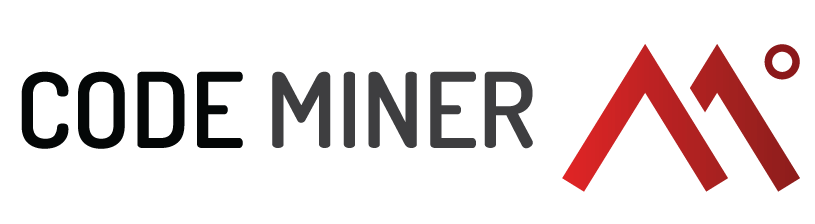

Realização
Apoio
-

- 
-

-

entrada gratuita
As inscrições em palestras são para obter certificados.
As inscrições em minicursos são para participar. As vagas são limitadas e ocorrerá sorteio em caso de excesso de candidatos. Fique de olho em seu email! ;)
Palestrante: Gabriel Jacquier - Tegra
Inscreva-seInstrutor: Felipe Soares - Fatec
Conteúdo: Nesse mini-curso serão abordados conceitos básicos de front-end e técnicas de desenvolvimento.
Inscreva-seInstrutor: Cesar Munari - Fatec
Conteúdo: Nesse mini-curso serão abordados conceitos avançados de SQL.
Inscreva-sePalestrante: Luís Henrique - GH
Inscreva-sePalestrante: Diego Cardoso - GFT
Inscreva-sePalestrante: Juliano Custódio - GFT
Inscreva-sePalestrante: Fernando Miranda - Fatec
Inscreva-seInstrutor: Felipe Soares - Fatec
Conteúdo: Nesse mini-curso serão abordados conceitos básicos de front-end e técnicas de desenvolvimento.
Instrutor: Cesar Munari - Fatec
Conteúdo: Nesse mini-curso serão abordados conceitos avançados de SQL.
Palestrante: Alexis da Rocha - IBM
Inscreva-sePalestrante: André Mitsuoka - Cabify
Inscreva-sePalestrante: Dora Mukudai - GFT
Inscreva-seInstrutor: Vitor Talaia - Codeminer
Conteúdo: Neste minicurso desenvolveremos uma pequena Pokédex, que irá realizar requisições a uma API, emitir e escutar eventos (tanto do DOM, quanto personalizados), além de aprendermos um pouco mais sobre testes automatizados e as ferramentas utilizadas para isso no ecossistema JavaScript.
Inscreva-seInstrutor: Caio Carrara - Mocha Studio
Conteúdo: Esse curso tem abordagem introdutória. Iremos aprender o básico de programação com Python, como estruturar um projeto e como fazer testes unitários. Para exercitar os nossos conhecimentos, criaremos uma mini versão do Twitter usando Flask, um microframework web.
Inscreva-seInstrutores: Celso Wo - Tegra, Henrique Cansela - GFT e Rafael Nunes - GFT
Conteúdo: Aprenda a fazer uma aplicação simples em Ionic 2 integrando com API e fazendo build para android.
Inscreva-sePalestrante: Bruno Tinoco - GFT
Inscreva-sePalestrante: Mazé Cardozo - Fatec
Inscreva-seInstrutor: Caique Mitsuoka - Fatec
Conteúdo: Nesse mini-curso serão abordados conceitos básicos de desenvolvimento Android
Inscreva-seInstrutor: Cesar Munari - Fatec
Conteúdo: Nesse mini-curso serão abordados conceitos avançados de SQL.
Palestrante: Carlos Mattos - GFT
Inscreva-sePalestrante: Mazé Cardozo - Fatec
Inscreva-sePalestrante: Rodrigo Barbieri - FIT
Inscreva-sePalestrante: Bianca Brancaleone - Eu Compraria!
Inscreva-seInstrutor: Vitor Talaia - Codeminer
Conteúdo: Neste minicurso desenvolveremos uma pequena Pokédex, que irá realizar requisições a uma API, emitir e escutar eventos (tanto do DOM, quanto personalizados), além de aprendermos um pouco mais sobre testes automatizados e as ferramentas utilizadas para isso no ecossistema JavaScript.
Instrutor: Caio Carrara - Mocha Studio
Conteúdo: Esse curso tem abordagem introdutória. Iremos aprender o básico de programação com Python, como estruturar um projeto e como fazer testes unitários. Para exercitar os nossos conhecimentos, criaremos uma mini versão do Twitter usando Flask, um microframework web.
Instrutores: Celso Wo - Tegra, Henrique Cansela - GFT e Rafael Nunes - GFT
Conteúdo: Aprenda a fazer uma aplicação simples em Ionic 2 integrando com API e fazendo build para android.
Palestrante: André Cristian de Oliveira - Fatec
Inscreva-seInstrutor: Caique Mitsuoka - Fatec
Conteúdo: Nesse mini-curso serão abordados conceitos básicos de desenvolvimento Android
Instrutor: Cesar Munari - Fatec
Conteúdo: Nesse mini-curso serão abordados conceitos avançados de SQL.
Palestrante: Aldren Moraes - Luizalabs
Inscreva-sePalestrante: Lucas Renan - fromAtoB / Guru Sorocaba
Inscreva-seInstrutor: Vitor Talaia - Codeminer
Conteúdo: Neste minicurso desenvolveremos uma pequena Pokédex, que irá realizar requisições a uma API, emitir e escutar eventos (tanto do DOM, quanto personalizados), além de aprendermos um pouco mais sobre testes automatizados e as ferramentas utilizadas para isso no ecossistema JavaScript.
Instrutor: Caio Carrara - Mocha Studio
Conteúdo: Esse curso tem abordagem introdutória. Iremos aprender o básico de programação com Python, como estruturar um projeto e como fazer testes unitários. Para exercitar os nossos conhecimentos, criaremos uma mini versão do Twitter usando Flask, um microframework web.
Instrutores: Celso Wo - Tegra, Henrique Cansela - GFT e Rafael Nunes - GFT
Conteúdo: Aprenda a fazer uma aplicação simples em Ionic 2 integrando com API e fazendo build para android.
Palestrante: Cesar Munari - Fatec
Inscreva-seInstrutor: Caique Mitsuoka - Fatec
Conteúdo: Nesse mini-curso serão abordados conceitos básicos de desenvolvimento Android
Instrutor: Cesar Munari - Fatec
Conteúdo: Nesse mini-curso serão abordados conceitos avançados de SQL.
Uma sessão de palestras rápidas sobre: entrevista&currículo, read search and ask, parque tecnológico, silicon valley, UX, comunidade, pokemon go, deep web&tor, netflix, freela e programação competitiva
Inscreva-seMercado de T.I. Debate aberto sobre as dificuldades e caminhos para entrar no mercado de T.I.
Inscreva-seAmanda Vilela - IBM
Git é uma ferramenta para controlar versão de código e trabalhar em equipe, essencial a qualquer desenvolvedor de software atual. Nesse curso, você aprenderá todo o caminho das pedras: da instalação ao uso do dia a dia.
Inscreva-seEspaço reservado para aprender como contribuir no GitHub e entender o fluxo de trabalho utilizando git, juntamente com instrutores que trabalham na área de desenvolvimento.
Venha contribuir com projetos open-source!
Inscreva-seTraga 1kg de alimento não-perecível
Estaremos arrecadando no hall do prédio 10: Central de Aulas